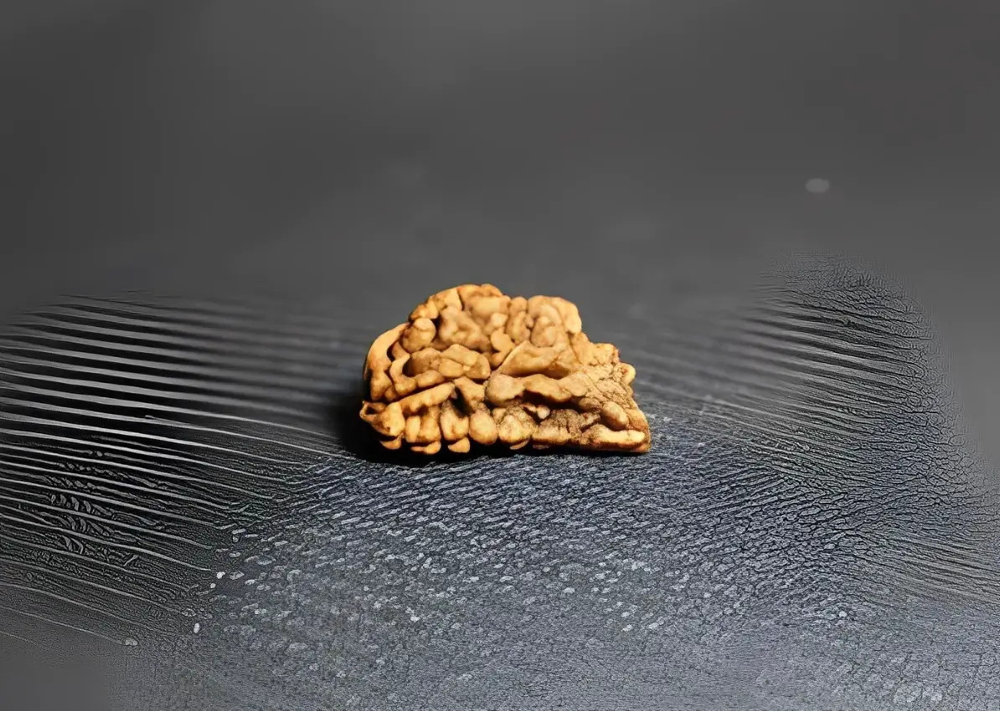

Ek Mukhi Rudraksha - Hạt Kim Cang 1 Khía
Hạt Rudraksha có tất cả 26 loại khác nhau, mỗi loại được phân biệt về số lượng khía (Mukhi)
trên về mặt hoặc hình dạng của hạt.

Hạt Ek Mukhi Rudraksha là một trong những hạt quý hiếm nhất và được coi là hạt Rudraksha cao cấp nhất.
Hạt này được tìm thấy ở một số khu vực của Ấn Độ và được coi là một trong những hạt quý nhất của các
loại hạt Rudraksha. Hạt Ek Mukhi Rudraksha được tin rằng có rất nhiều lợi ích cho người sử dụng.
Trên thị trường, các hạt được bán phổ biến nhất từ 1 đến 14 khía trong đó hạt Rudraksha 1 khía (Ek Mukhi
Rudraksha) được cho là loại hiếm nhất trong số tất cả các hạt và là vua của tất cả hạt Rudraksha.
Ek mukhi rudraksha có hình dạng nửa hình elip giống như con mắt và được các Yogis coi là con mắt của
thần Shiva (Shivnetra) hoặc một khía đối với loại có hình tròn.
Ý nghĩa của Ek Mukhi Rudraksha
Theo truyền thuyết hạt này được cai trị bởi chính vị thần Shiva do đó người ta tin rằng
người đeo hạt này sẽ mang lại phước lành dồi dào, nâng cao nhận thức cho người đeo.
Trong tín ngưỡng Hindu, việc sử dụng Ek Mukhi Rudraksha cũng được coi là một phần quan trọng của việc
thực hành yoga và thiền định. Hạt rudraksha này giúp tạo ra một tâm trạng tĩnh lặng và tập trung cao độ,
từ đó giúp người sử dụng tiếp cận được với trạng thái tâm linh sâu sắc.
Tóm lại, Ek Mukhi Rudraksha không chỉ là một món trang sức mà còn mang theo một ý nghĩa sâu sắc và nhiều
lợi ích tốt đẹp cho người sử dụng. Đối với những người theo đạo Hindu và những ai quan tâm đến, Ek Mukhi
Rudraksha là một biểu tượng quan trọng và mang lại sự kết nối với vũ trụ.
Lợi ích của Ek mukhi Rudraksha
Một trong những lợi ích chính của hạt Ek Mukhi Rudraksha là nó được tin rằng có khả năng giúp người sử
dụng đạt được trạng thái tốt nhất trong cuộc sống.
Nó được tin rằng có khả năng giúp người sử dụng đạt được sự bình tĩnh và sự bình an trong tâm trí của họ.
Có khả năng giúp người sử dụng đạt được sự tự tin và sự tự tin trong các mối quan hệ của họ.
Hạt Ek Mukhi Rudraksha được cho là loại Rudraksha tốt nhất cho thiền định và tăng cường năng lượng
tích cực.
Nhiều người tin rằng hạt Ek Mukhi Rudraksha còn có nhiều tác dụng như:
Giảm Stress và Lo Âu
Hạt Ek Mukhi Rudraksha được liên kết nguồn năng lượng tích cực hỗ trợ giảm căng thẳng và lo lắng. Việc
đeo hạt có thể giúp cảm giác yên bình và giảm áp lực tâm lý.
Tăng Cường Tập Trung
Ek Mukhi Rudraksha có thể tăng cường khả năng tập trung và sự chú ý, giúp người đeo duy trì một tâm trạng
tinh thần tích cực và tập trung.
Hạt Ek Mukhi Rudraksha được cho là có thể giúp người đeo đạt được trạng thái cân bằng và hài hòa cả về
thể chất lẫn tinh thần. Điều này có thể giúp tăng cường sự tập trung bằng cách loại bỏ căng thẳng và lo
lắng.
Hỗ Trợ Chữa Trị Trầm Cảm
Theo một số quan điểm, Ek Mukhi Rudraksha được cho là có khả năng giúp cải thiện tâm trạng và hỗ trợ
trong quá trình chữa trị trầm cảm, mang lại một cảm giác an tâm và lạc quan.
Đối Phó với Rối Loạn Tăng Giảm Thần Kinh (OCD)
Hạt Ek Mukhi Rudraksha được cho là có thể giúp đối phó với OCD vì nó có thể giúp giảm căng thẳng, lo lắng
và các triệu chứng khác của rối loạn này.
Dưới đây là một số cách cụ thể mà hạt Ek Mukhi Rudraksha có thể giúp đối phó với OCD:
Giảm căng thẳng và lo lắng
Căng thẳng và lo lắng là những yếu tố góp phần gây ra OCD. Hạt Ek Mukhi Rudraksha được cho là có thể giúp
giảm căng thẳng và lo lắng bằng cách cân bằng năng lượng trong cơ thể và tâm trí.
Tăng cường năng lượng tinh thần
Năng lượng tinh thần mạnh mẽ có thể giúp người đeo đối phó với những suy nghĩ ám ảnh và hành vi cưỡng
chế. Hạt Ek Mukhi Rudraksha được cho là có thể giúp tăng cường năng lượng tinh thần bằng cách cung cấp
cho người đeo năng lượng tích cực.
Cung cấp sự bảo vệ
Khi người đeo cảm thấy được bảo vệ, họ có thể đối phó với OCD tốt hơn. Hạt Ek Mukhi Rudraksha được cho là
có thể cung cấp cho người đeo sự bảo vệ và hướng dẫn bằng cách kết nối họ với năng lượng tích cực.
Nếu bạn đang tìm cách đối phó với OCD, hạt Ek Mukhi Rudraksha có thể là một lựa chọn đáng cân nhắc. Tuy
nhiên, điều quan trọng cần lưu ý là hạt Ek Mukhi Rudraksha không phải là một phương pháp điều trị thay
thế cho các phương pháp điều trị OCD truyền thống, chẳng hạn như liệu pháp tâm lý hoặc thuốc men.
Tăng Cường Năng Lượng Tích Cực
Hạt Rudraksha có thể giúp tăng cường sự kết nối với năng lượng bên ngoài, mang lại một chiều sâu
tâm hồn.
An Tâm và Bình Yên
Người đeo thường cảm thấy an tâm và bình yên khi đeo Ek Mukhi Rudraksha, đặc biệt trong những tình huống
căng thẳng và khó khăn.
Lợi ích của Ek Mukhi Rudraksha thường được biểu đạt dưới góc tâm trạng và hiệu quả có thể thay đổi tùy
thuộc vào đặc tính cá nhân của mỗi người. Nếu bạn đang xem xét việc sử dụng Ek Mukhi Rudraksha như một
phần của quá trình chữa trị, hãy tìm kiếm sự tư vấn chuyên nghiệp từ các chuyên gia hoặc người có kinh
nghiệm.
Cách đeo Ek Mukhi Radraksha
Không có quy định nghiêm ngặt nào về việc đeo Ek Mukhi Rudraksha. Tuy nhiên, nên đeo 1 hạt mukhi
Rudraksha đã nạp đầy năng lượng.
Ek Mukhi Rudraksha có thể được kết nối bằng sợi tơ tằm/len hoặc được gắn vào các trang sức làm
bằng bac, vàng. Bạn có thể đeo hạt này quanh cổ hoặc đeo nó như một chiếc vòng tay.
Hạt Ek Mukhi Radraksha phù hợp cho mọi đối tượng từ 14 tuổi trở lên có thể đeo, tuy nhiên nếu
bạn đang muốn đeo với mục đích để hỗ trợ trong việc thiền định, tăng cường năng tích cực
và thanh lọc hào quang tốt nhất thì đây là loại hạt dành cho bạn.
Giá của Ek Mukhi Radraksha
Ek mukhi Rudraksha là một trong những hạt hiếm nhất hiện có trong tự nhiên. Vì đặc tính của nó, hạt này
rất được ưa chuộng nhưng lại hiếm khi được tìm thấy. Do vậy giá của hạt này dao động khoảng 300$ phụ
thuộc vào kích thước và nguồn gốc của hạt.